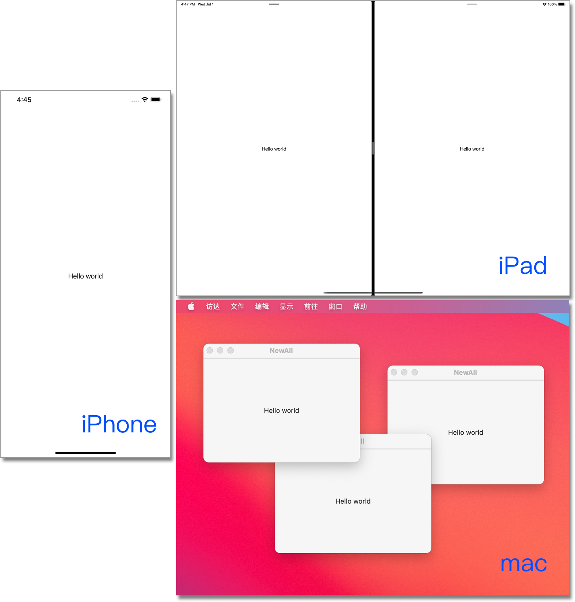
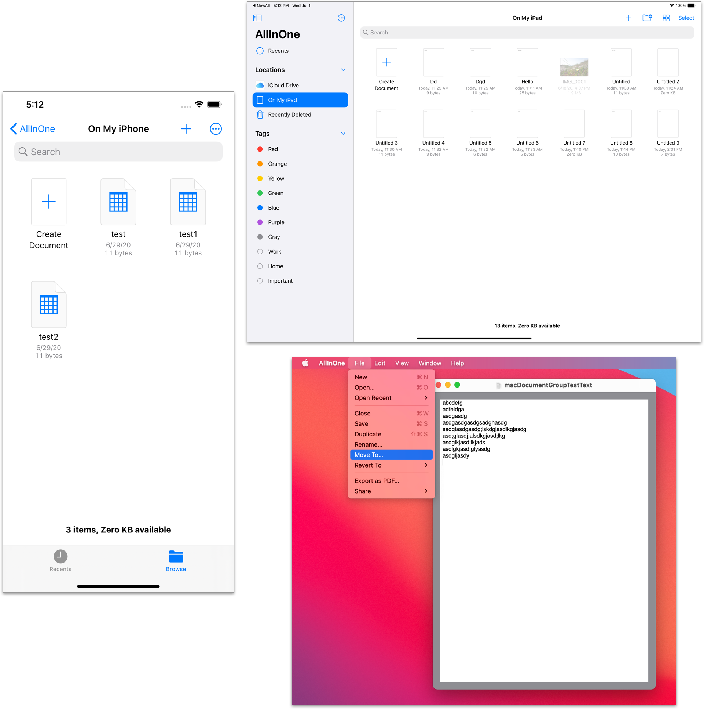
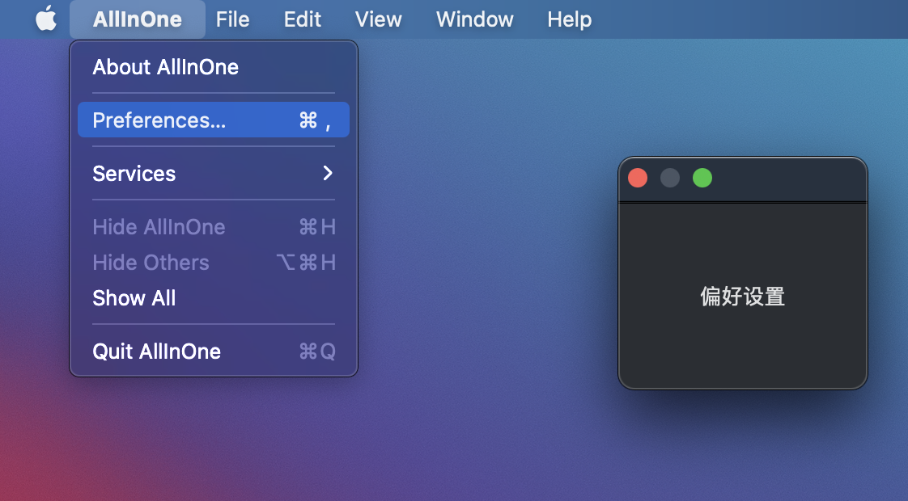

本文简单介绍了SwiftUI2.0中全新提供的App协议、Scene协议，浅谈了在全新的代码结构下如何组织Data Flow，并提供了SwiftUI2.0中预置的Scene的一些使用示例。
当前运行环境为 Xcode Version 12.0 beta (12A6159), macOS Big Sur 11.0 Beta版(20A4299v)。
WWDC20中，苹果为开发者带来了基于SwiftUI的全新项目模板。使用该模板，将使项目代码变得异常简洁、清晰。
1 | @main |
上述代码可以在屏幕上完成Hello world的显示，且能够运行于iOS和macOS平台下。
基本概念
App
SwiftUI2.0提供的全新协议。通过声明一个符合App协议的结构来创建一个程序，并通过计算属性body来实现程序的内容。
-
通过@main(swift5.3 新特性)设定程序的入口，每个项目只能有一个进入点
-
管理整个app的生命周期
-
在这个作用域下声明的常量、变量其生命周期与整个app是完全一致的。
Scene
场景是视图（View）层次结构的容器。通过在App实例的body中组合一个或多个符合Scene协议的实例来呈现具体程序。
- 生命周期由系统管理
- 系统会根据运行平台的不同而调整场景的展示行为（比如相同的代码在iOS和macOS下的呈现不同，或者某些场景仅能运行于特定的平台）
- SwiftUI2.0提供了几个预置的场景，用户也可以自己编写符合Scene协议的场景。上述代码中便是使用的一个预置场景WindowGroup
通过App和Scene的加入，绝不是仅仅减少代码量这么简单。通过这个明确的层级设定，我们可以更好的掌握在不同作用域下各个部分的生命周期、更精准数据传递、以及更便利的多平台代码共享。本文后面会用具体代码来逐个阐述。
App和Scene都是通过各自的functionBuilder来解析的，也就是说，新的模板从程序的入口开始便是使用DSL来描述的。
程序系统事件响应
由于去除了AppDelegate.swift和SceneDelegate.swift，SwiftUI2.0提供了新的方法来让程序响应系统事件。
针对AppDelegate.swift
在iOS系统下，通过使用@UIApplicationDelegateAdaptor可以方便的实现之前AppDelegate.swfit中提供的功能：
1 | @main |
由于目前还是测试版，虽然很多的事件已经定义，但现在并没有响应。估计很快会增加修改过来
针对SceneDelegate.swift
通过新增添的EnvironmentKey scenePhase 和新的**.onChange** 方法，SwiftUI提供了一个更加有趣的场景事件解决方案：
1 | @main |
同样是由于测试版的原因，该响应目前并没有完成。不过这段代码目前来看是iOS和macOS都通用的
预置场景
-
WKNotificationScene
仅适用于watchOS7.0，用于响应指定类别的远程或本地通知。目前还没有研究。 -
WindowGroup
最常用的场景，可以呈现一组结构相同的窗口。使用该场景，我们无需在代码上做修改，只需要在项目中设定是否支持多窗口，系统将会按照运行平台的特性自动管理。
在iOS中，只能呈现一个运行窗口。
在PadOS中（如打开多窗口支持），最多可以打开两个运行窗口，可以分屏显示，也可以全屏独立显示。
在macOS中，可以打开多个窗口，并通过程序菜单中的窗口菜单来进行多窗口管理。
最开始的代码在三个平台下的状态：

如果在一个WindowGroup里加入多个View,呈现状态有点类似VStack。在一个Scene中加入多个WindowGroup，只有最前面的可以被显示。
-
DocumentGroup
创建一个可处理指定文件类型的窗口。在iOS和PadOS下都首先会呈现文件管理器，点击文件，进入对应的View来处理。macOS下，通过菜单中的文件操作来选择或创建文件。
通过创建一个符合FileDocument的结构来定义支持哪种格式，以及打开和保存的工作。
1
2
3
4
5
6
7
8
9
10
11
12
13
14
15
16
17
18
19
20
21
22
23
24
25
26
27
28
29
30
31
32
33
34
35
36//纯文本格式文件。write的方法用于描述如何写入文件，如果不需写入可为空。
struct TextFile: FileDocument {
static var readableContentTypes = [UTType.plainText]
var text = ""
init(initialText: String = "") {
text = initialText
}
init(fileWrapper: FileWrapper, contentType: UTType) throws {
if let data = fileWrapper.regularFileContents {
text = String(decoding: data, as: UTF8.self)
}
}
func write(to fileWrapper: inout FileWrapper, contentType: UTType) throws {
let data = Data(text.utf8)
let file = FileWrapper(regularFileWithContents: data)
fileWrapper = file
}
}
//图片文件，由于需要转换成UIImage，该代码只支持iOS或PadOS
#if os(iOS)
struct ImageFile: FileDocument {
static var readableContentTypes = [UTType.image]
var image = UIImage()
init(initialImage: UIImage = UIImage()) {
image = initialImage
}
init(fileWrapper: FileWrapper, contentType: UTType) throws {
if let data = fileWrapper.regularFileContents {
image = UIImage(data: data) ?? UIImage()
}
}
func write(to fileWrapper: inout FileWrapper, contentType: UTType) throws { }
}
#endif调用
1
2
3
4
5
6
7
8
9
10
11
12
13
14
15
16
17
18
19
20
21
22
23
24
25
26
27
28
29
30
31
32
33
34
35
36
37
38
39
40
41
42
43
44
45import SwiftUI
#if os(iOS)
import UIKit
#endif
import UniformTypeIdentifiers
@main
struct NewAllApp: App {
@SceneBuilder var body: some Scene {
//可读写
DocumentGroup(newDocument: TextFile()) { file in
TextEditorView(document: file.$document)
}
#if os(iOS)
//只读
DocumentGroup(viewing: ImageFile.self) { file in
ImageViewerView(file: file.$document)
}
#endif
}
}
struct TextEditorView: View {
@Binding var document: TextFile
@State var name = ""
var body: some View {
VStack{
TextEditor(text: $document.text)
.padding()
}
.background(Color.gray)
}
}
#if os(iOS)
struct ImageViewerView:View{
@Binding var document:ImageFile
var body: some View{
Image(uiImage: document.image)
.resizable(resizingMode: .stretch)
.aspectRatio(contentMode: .fit)
}
}
#endif

可以将多个DocumentGroup放入Scene中，程序将会一并支持每个DocumentGroup所定义的文件类型。上述代码使程序可以创建、编辑纯文本文件，并且可以浏览图片文件。
在macOS上，需要在macOS.entitlements中设置com.apple.security.files.user-selected.read-write为真才能完成写入。
当在Scene中加入多个场景时，需要使用@SceneBuilder或用Group将多个场景涵盖起来。
macOS下当同时加入WindowGroup和DocumentGroup时，两个功能都可以正常运行。iOS或PadOS下，只有顺序在最前面的被显示。
由于测试版的原因，目前仍有大量的功能无法实现或有问题。比如仍无法在iOS上通过fileDocument提供的filename来设置文件名，或者无法在创建新文件时选择格式等
-
Settings
只用于macOS,用于编写程序的偏好设置窗口。
1
2
3
4
5#if os(macOS)
Settings{
Text("偏好设置").padding(.all, 50)
}
#endif
其他
- onChange
监视指定的值，在值改变时执行指定的action。在scenePhase的用法介绍中有使用的范例 - onCommands
在macOS下设置程序的菜单。具体的使用方法请查看SwiftUI2.0 —— Commands（macOS菜单） - defaultAppStorage
如果不想使用系统缺省UserDefault.standard，可以自行设置存储位置，使用的几率不高。
小结
至此，本文简单介绍了SwiftUI2.0新增的App和Scene，下篇文章我们将探讨在新的层次结构下如何组织我们代码的Data Flow。
当前的@AppBuilder和@SceneBuilder的功能都十分的基础，不包含任何的逻辑判断功能，因此目前我还没有办法实现根据条件来选择性的展示所需的Scene。相信苹果应该会在未来增加这样的能力
本文的代码为了能够在多平台使用，所以增加了不少编译判断，如果你只是在iOS,或macOS下开发SwiftUI，则可根据各自平台简化代码。另外Xcode12中的代码补全对于Target的设定很敏感，如果你发现无法对某些平台的特定语句进行补全，请查看是否将Scheme设置到对应的平台。
 支付宝打赏
支付宝打赏
 微信打赏
微信打赏
请我喝杯茶